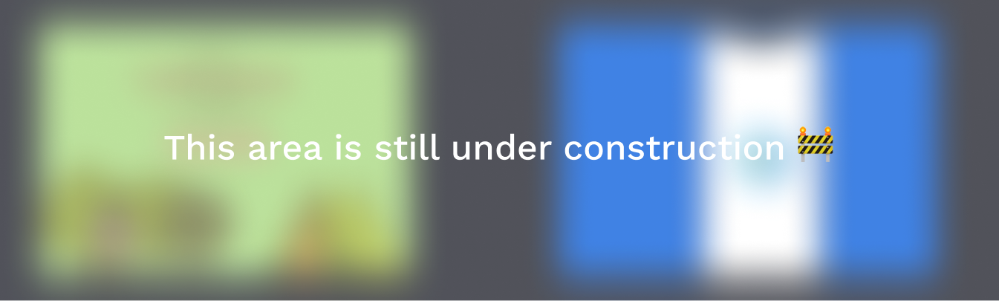

Projects
About
I’m a product designer and developer currently pursuing a B.S. in Computer Science and a minor in Graphic Design at Cal State Fullerton.
Most recently I worked at InternMakers as a web development intern. I also currently serve a the president of the ACM student chapter at CSUF where I get to grow an awsome community in tech.
Outside of school and work life I really enjoy the art of coffee since I was a barista in my past life. If you ever wanna nerd out about caffine hit me up! Additionaly I love doing mentorship because I like to joke about being “past my prime,” and I want to pass foward the resources others have given to me.